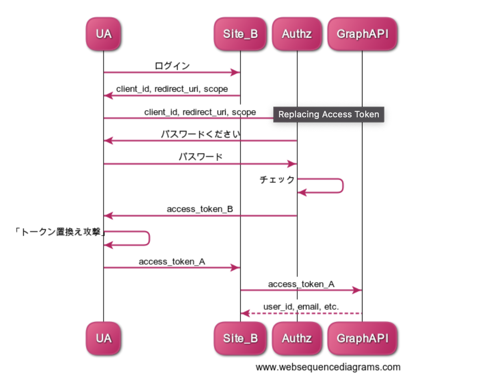
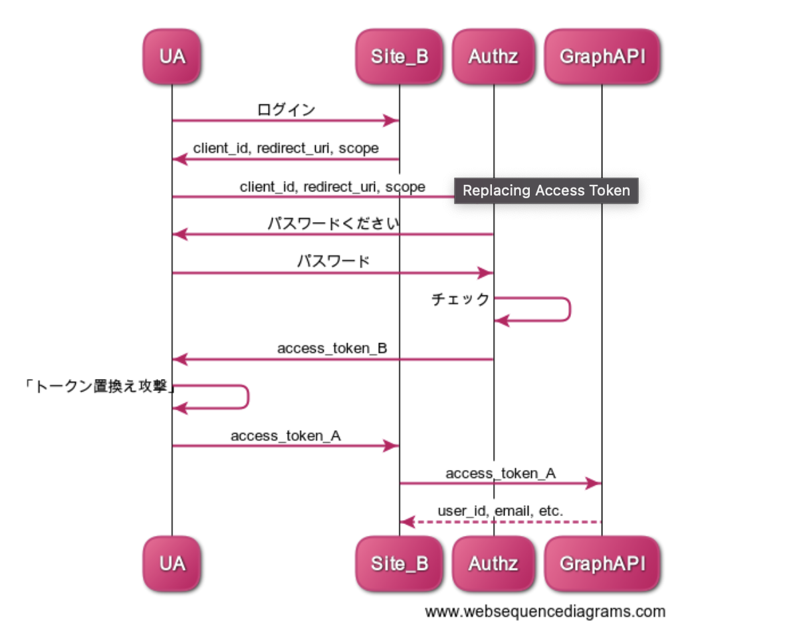

1. 認証認可¶
認証認可のサーバーからTOKENを受け取って、 バックエンド機能に問い合わせをしていくのが基本の動き。 認可の情報に従って、提供するサービスを制御してバックエンドは処理を返していく
1.1. OAuth2.0やOpenIDConnect勉強¶
1.1.1. 認証認可¶
1.1.1.1. 認証¶
あなたは誰と問うこと。なりすましは許さないための処理。以下の情報で判断
What You Are：生体認証とか
What You Have：トークンとか
What You Know：IDとか
1.1.1.2. 認可¶
誰かに鍵を渡すこと。相手が誰かは意識していない。鍵を持っているなら誰でも錠を開けることを許す。
1.1.2. マイクロサービスの認証認可・OAuthからOIDCの流れ¶
これまでの認証認可のアーキテクチャでは一つのサービスで認証した情報をセッションで持って、その情報で認可制御をしていた。 マイクロサービスアーキテクチャでは、複数のサービスが強調して動作するので、認証認可のプロセスが煩雑になる。
そこで、認証認可をサーバーから切り離して、認証情報や認可情報をAPIサーバー間でやりとりすることで管理を容易にしたい。 認可情報をやりとりするためのプロトコルをAPIサーバー・エンドユーザー・認可プロバイダーで決めておく必要があり、それがOAuth

Oauthは認可の仕組みに過ぎず、認証の仕組みが仕様になっていない。 そのため、トークンの横取りで攻撃されてしまうという問題があった。
この問題に対応したのがOIDC。 OIDCは、OAuthの認可に加えて「ID Token」という検証可能なトークンを利用 ID Tokenは「JWT(Json Web Token)」という改ざん耐性のある仕組みを採用。
OIDCを提供するOSSとしては、keycloakなどがある
1.1.3. JWTって何¶
任意のJSONデータを格納できるURLセーフな文字列 中身には以下の３つのデータがある
ヘッダー：トークンの形式や署名のバージョン
クレーム：OIDCではここに認証情報を記述
署名：正しい発行者が発行したID Tokenである証跡
Googleから発行されたJWTのクレームを見てみると以下の情報が入っている
iss (ISSuer)：トークンの発行者
aud (AUDience)：トークンの受け手
exp (EXPiration)：有効期限 これらをサーバー側で検証することによって、「正しい発行者が」「自サイト向けに」「１時間以内に認証して発行された（Googleの場合）」IDトークン以外は受け付けないようにできます。
1.1.4. OAuth2.0¶
HTTP上で、認可を行うための仕様
正確にに書くと
OAuth 2.0 とは、サービスのユーザーが、サービス上にホストされている自分のデータへのアクセスを、自分のクレデンシャルズ (ID & パスワード) を渡すことなく、第三者のアプリケーションに許可するためのフレームワークである。
具体例で書くと
あるサイトAの機能（FaceBookの写真投稿）を、サイトB（Instagram）から実行するために、 ユーザーがサイトBに許可を与えて、サイトAにアクセスすることを認めること。
ユーザーがサイトBでサイトAについて認可すると、サイトBの認可チケットをサイトAへわたす。 そうすると、サイトAにサイトBの認証情報をおかないで、サイトAへ認可することができる。

OAuthが流行っている理由
パスワードをサードパーティのアプリに渡すことなくAPIを利用できる
どのリソースにアクセス可能かを細かくユーザーに認可させることができる
1.1.4.1. トークンの発行フロー¶
Authorization Code GrantとImplicit Grantの２つがある。
1.1.4.1.1. Authorization Code Grant¶
Authrozation CodeはサイトAのTokenをユーザーには渡さない 代わりに、認可コードをWebアプリケーションに渡す。

1.1.4.1.2. Implicit Grant¶
一番の違いはImplicit GrandはサイトAのTokenを一度ユーザーに渡す点

1.1.5. OAuth認証¶
OAuthを使って、認証までしてしまおうという考え。 本来OAuthは認証ではなくて認可の使用なので、間違って使うと脆弱性が生まれる。 A君のロッカーを開ける鍵持っているということは、ちゃんとA君だよという認証してきたってことだよね。 よしよし君はAだなという認証をしちゃう

本来認証ではない行為を使って認証をしている。マンションの合鍵を持ってきて、本人確認をする。 OAuth Server（Twitter）とかで悪さすることができるので、合鍵をばら撒くのは好ましくない・・・

セキュリティ的なレベルの低さはあったが、手軽さのおかげで普及した
1.1.5.1. セキュリティホール¶
いつ」「どこで」「なんのために」作られたのか分からないいつ」「どこで」「なんのために」作られたのか分からない セキュリティホールは、 access_tokenをUserAgentに渡すということは、UAはaccess_tokenを使いまわせる点にある。 サイトAが悪役で、渡したTokenが盗まれたとすると、そのTokenを使うことで、認証せずに、サイトBがAのふりをできる。
 

1.1.6. OpenID¶
異なるWebサービス間でユーザーの認証情報を受け渡す方法
認証：紹介状を使って本人確認をしているイメージ 紹介状はIdentity Provider（Googleとか）に書いてもらう

登場人物は３人
EndUser
OpenID Provider(ユーザー認証を行う)
Relying Party（ユーザーの許可のもと、OPから認証情報をもらう）
1.1.7. OpenID Connect¶
認証の仕様
上記のOAuthの課題観を解決するためにOpenID Connctを開発。 OAuthとOpenIDを組み合わせて、認証を提供する OIDCで払い出されるIDトークンは偽造不可能な名前付きの合鍵。 「いつ」「どこで」「なんのために」発行されたトークンなのかの情報を含んでおり、かつ署名されているため改ざんができない
基本アイデアはOAuthで渡す鍵を紹介状が入っているロッカーの鍵にすること このロッカーを「UserInfo （ユーザ情報）Endpoint」と呼ぶ 紹介状の中には、どのような認証をしたのかというメタ情報もある。この紹介状のことを、OpenIDトークンと呼ぶ

1.2. Cognito¶
アプリケーションの認証認可を行うサービスで、アカウント管理と認可の付与をフルマネージドでサポート
1.2.1. ユーザープール¶
Cognitoユーザーの管理→認証
1.2.2. IDプール¶
ユーザープールのアカウントに対して、IAMロールを付与する→認可